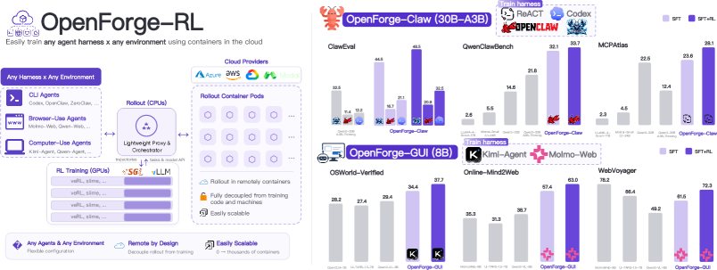
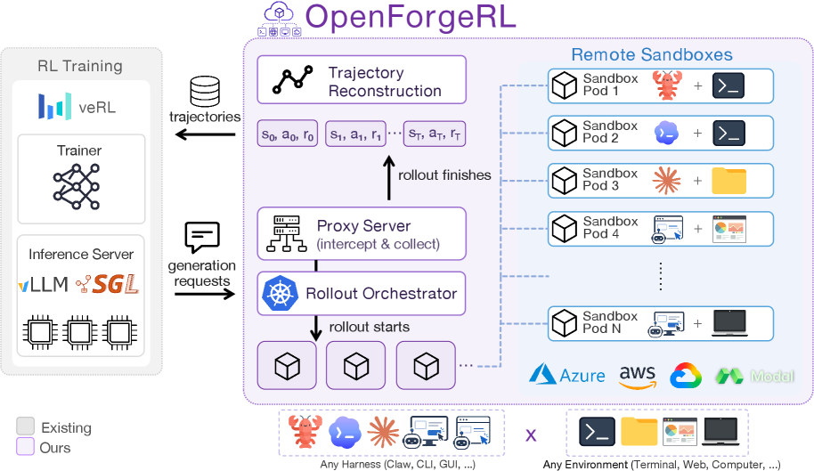
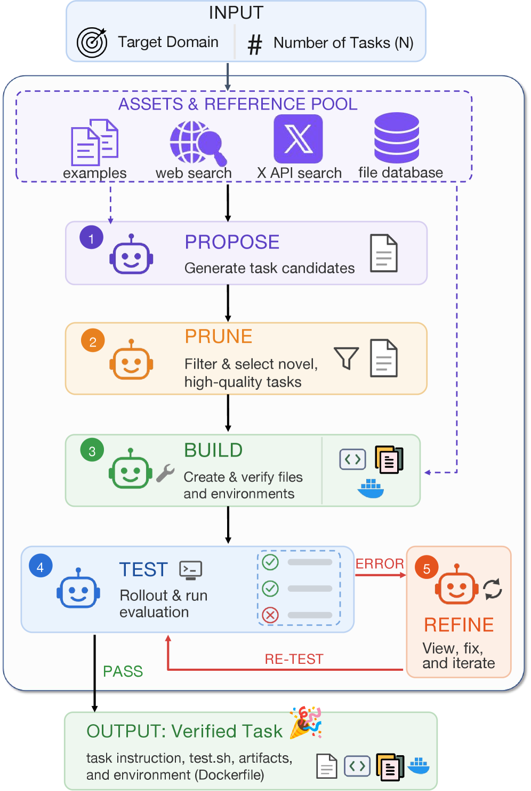
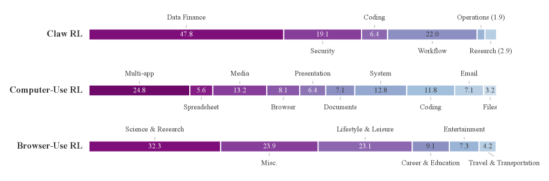
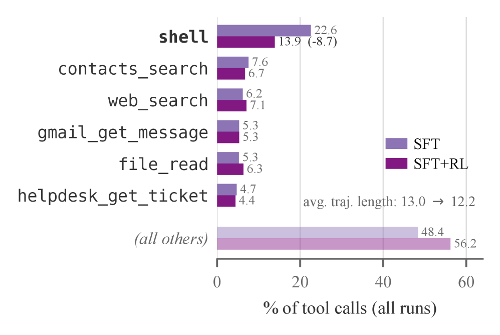
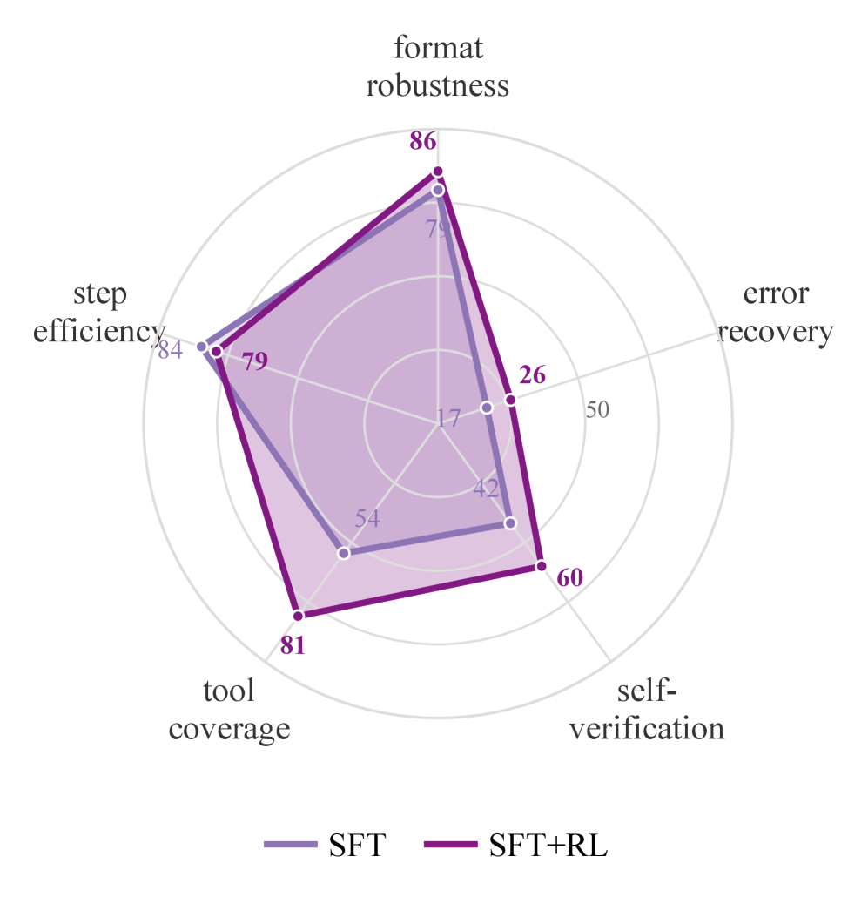

现代AI Agent很少是裸语言模型：它们被包裹在日益复杂的推理Harness中：Claude Code、Codex、OpenClaw等脚手架负责管理多轮交互、工具调用和上下文，将模型连接到外部系统。然而，这些Harness使推理变成了有状态、多进程的过程，开放的RL框架无法原生表达。
OpenForge RL提出了一个简洁的解决方案：通过代理 + Kubernetes编排器，将任何Harness与任何环境配对，接入标准RL代码库。 在Claw工具使用和GUI浏览器/桌面控制两个场景中，同规模模型在几乎所有基准上全面超越开源基线。
带Harness的Agent虽然功能强大，但端到端改进对开源研究社区来说遥不可及，原因有两个：
第一，Harness与训练栈不兼容。 Harness把推理变成了有状态、多进程的过程（嵌套工具调用、子Agent、长程上下文管理），而开放训练栈（veRL、Slime等）假设rollouts是简单的单轮生成或轻量工具调用。开源努力往往需要为训练重新实现一个简化版的Harness，造成「训练-部署不匹配」。
第二，Harness需要容器化环境。 运行Harness需要专用的容器化环境，这些环境不能和控制节点共置，但大多数开放RL框架假设rollouts在训练器本地运行。这些差距导致专有Harness系统越来越领先于研究社区可以训练和研究的范围。
OpenForge RL是解决上述问题的开源框架，核心是两个轻量级组件：
代理包装推理服务器（如vLLM），拦截由rollout容器发出的所有生成请求。当rollout完成时，代理收集终端奖励和提示-响应对，通过自动轨迹重建将其转换为标准训练样本，兼容任何RL代码库（如veRL）。这样，任何Harness都可以运行自己的任意推理，而不需要修改训练循环。
对于基于组的算法（如GRPO），通过比较同一组内不同轨迹的平均奖励来计算advantage。
基于Orchard构建，Kubernetes编排器在云提供商（如Microsoft Azure）上创建、管理和删除rollout容器，实现弹性扩展。针对三个实际挑战的解决方案：
异步rollout与超时：每个rollout远程运行，单个无响应会阻塞整个训练批次。通过wall-clock超时来终止卡住的作业，训练继续收集剩余rollouts的结果。
错误处理：因网络问题、Harness崩溃或超时而失败的轨迹，丢弃所有样本而非使用部分信号。
资源管理：弹性创建和删除容器，不超载训练节点。
OpenForge RL的核心概念如左图所示：一个编排器在云提供商上创建远程沙箱，每个沙箱中运行完整的Harness推理。代理包装推理服务器，拦截由rollout容器发出的所有生成请求，并在rollout完成后收集轨迹和奖励，重建为训练样本。

OpenForge RL的完整系统架构如下图所示。Kubernetes编排器在云提供商上创建和管理远程沙箱，代理将推理服务器与训练引擎解耦，使得任何Harness都可以运行自己的任意推理，而不需要修改训练循环。

本文的目标是在超越编程的多种环境中端到端训练基于Harness的Agent，如浏览器和桌面使用。与编程不同，这些领域提供的训练任务、Harness和RL就绪环境要少得多。因此，论文构建了一个简单的管道来合成为数据稀缺领域（如claw日常工具使用和计算机使用）的SFT和RL任务。下图展示了合成管道的整体流程：

管道模拟人类策划任务的方式：给定目标领域和任务数量，并行生成Agent来（1）基于现实场景提出候选指令；（2）修剪低质量和重复任务；（3）为每个任务构建可执行环境和验证脚本；（4）通过独立开放LLM/VLM的rollout测试任务；（5）修补缺陷直至通过所有检查。下图展示了训练任务的分布情况：

在文本工具使用场景中，使用Qwen3-30B-A3B-Thinking作为骨干模型，在四种Harness（ReACT、ZeroClaw、OpenClaw、Codex）上训练。通过自动数据合成管道生成任务，从MiniMax-M2.5蒸馏SFT轨迹，再通过GRPO进行RL训练（8 × B200 GPU，batch size=8，group size=8）。
OpenForge-Claw在三个基准上全面超越同规模模型：
ClawEval：pass@3达到31.7，pass@3在三次尝试中成功率为55.9。
QwenClawBench：pass@1达到33.7。
MCPAtlas：pass@1达到28.1。
SFT+RL相比纯SFT在鲁棒性和平均成功率上有显著提升，验证了RL框架的有效性。
在多模态GUI场景中，使用Qwen3-VL-8B-Thinking作为骨干模型，训练Kimi-Agent风格的计算机使用Agent和Molmo-Web风格的浏览器Agent。SFT从Kimi-K2.5蒸馏，RL同样使用GRPO。
OpenForge-GUI在三个基准上全面超越同规模模型：
OSWorld-Verified：平均成功率37.7，测试计算机使用场景。
Online-Mind2Web：平均成功率63.0，测试浏览器使用场景。
WebVoyager：平均成功率72.3，测试浏览器使用场景。
值得注意的是，MolmoWeb使用了超过200K任务进行训练，而OpenForge-GUI仅用2.5K任务就在Online-Mind2Web上超越它，在WebVoyager上保持竞争力。SFT+RL相比纯SFT在所有三个基准上都有实质性提升。
论文围绕三个问题进行了深入分析：
在四种Harness上的评估显示两个趋势：支持直接添加自定义工具的Harness（ReACT和ZeroClaw）达到最高性能；SFT+RL在每个Harness上都带来大幅提升，但OpenClaw提升有限：它的提示和上下文远长于其他Harness。这验证了先前的发现：更简单、设计更好的工具和控制流对Agent性能至关重要。
比较两个模型：一个只在ZeroClaw上训练，另一个在ZeroClaw + OpenClaw + Codex上训练。结果有两个关键发现：
单一Harness训练已能泛化：只在ZeroClaw上训练的模型，在未见过OpenClaw上提升 +3.3，在未见过Codex上提升 +4.6。
多Harness训练更好：在所有三个Harness上训练的模型效果最好，在复杂Harness上提升最大（OpenClaw +9.5，Codex +20.3），甚至ZeroClaw自身上也超过了单一训练（48.5 vs 46.0）。
通过比较100条SFT和SFT+RL轨迹，发现了三个关键变化：
工具使用优化：通用shell调用从22.6% 降到13.9%，转向专用服务工具。图5a展示了完整的工具调用分布变化。
Agentic能力提升：RL增强了错误恢复、自验证和工具覆盖范围。图5b的雷达图展示了五种关键能力的变化。
错误恢复仍然薄弱：即使在RL之后，错误恢复仍然是最弱的能力。论文假设这类能力仅靠RL难以获得，可能需要专门的数据或训练方法。


参考：https://arxiv.org/html/2607.21557v1